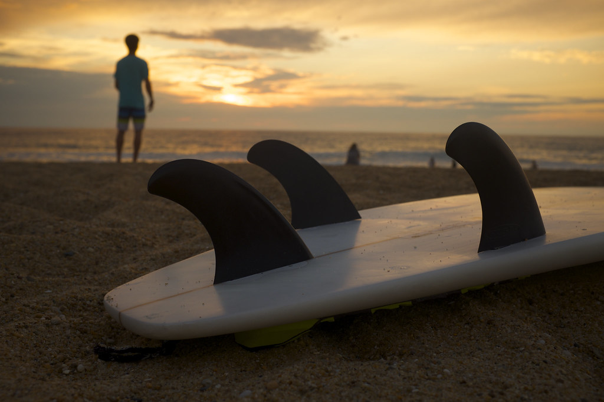
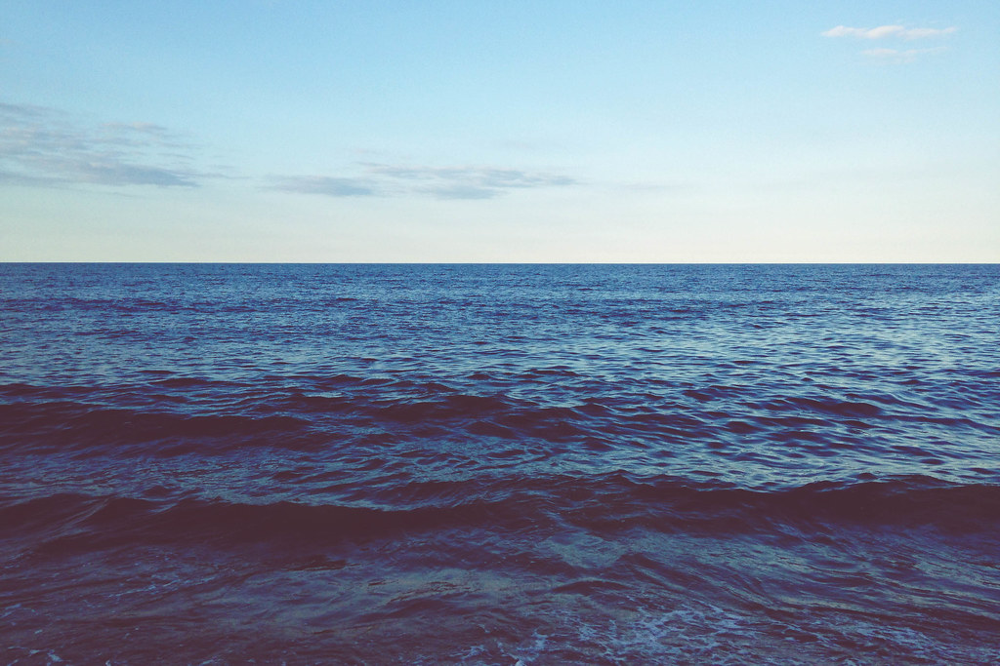

STORY
サーフカルチャーを愛する人が、自然と集まる場所に
下田市吉佐美は、サーファーたちに親しまれてきた波の土地です。OnTheBeachは、その海のそばで、サーフィンを愛する人も、ふらりと立ち寄った人も、同じように心地よく過ごせる場所であろうとしています。朝の波に乗った後のひと息、昼の光の中で過ごすゆったりとした時間、日が沈む頃に訪れる静かな時間。どの時間に訪れても、海と共にある空気を感じていただけたらと思っています。
LOCATION
吉佐美大浜、海の表情が変わる時間
吉佐美大浜は、波とサーファーの姿が絶えない海岸として知られています。日中は光を受けて輝く海面、夕方になると空と海がオレンジやマスタードの色に染まっていく時間帯があり、一日の中でいくつもの表情を見せてくれる場所です。海岸沿いの道沿いに店を構え、そうした海の変化をすぐそばで感じられる立地にしています。

SPACE
レトロサーフポスターのような店内で
店内やテラスは、太いアウトラインと波のラインが印象的な、1970年代のサーフポスターを思わせる雰囲気で設えています。サーフボードのシルエットや半円形のサンセットモチーフを装飾にあしらい、派手すぎず、少し大人びた海辺の空気を演出しています。
FOOD & DRINK
地のものを活かすという方向性
フード・ドリンクともに、地のものを活かした内容を検討しています。具体的な仕入れ先やメニュー内容については現在準備中のため、確定した情報は改めてご案内いたします。